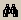
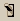
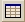
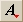
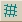
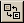
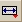
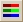

|  | Opens the
Find Command dialog box from an empty Builder line. Enter a
command name and click Find. The command name is highlighted on the tree
structure. Click
OK or double-click the command name to insert it in the
Builder. |
| Sends all valid Builder rows, which must include objects, to
ASAP for processing, then displays a 3-D view of geometry. This is
non-intrusive, since the current ASAP system status is saved before the
preview, and restored later. |
| Sends only valid selected rows, which must include objects,
to ASAP for processing. Use to preview your partial system as you build it and
detect any problems. This is non-intrusive, since the current ASAP system
status is saved before the preview, and restored later. |
|  | Opens the dialog box for setting perturbation of tolerancing
data. |
|  | Opens the Tolerancing dialog box for setting up the
distribution for the analysis. |
| Deletes selected entry. |
| Inserts an empty row in the Builder. |
| Toggles the comment status for a selection. |
| Toggles selected surfaces or edges between object and entity
status. (Entities are useful for bounding objects.) |
| Explodes the lens into its components. |
|  | Allows selection of the font size, using the drop-down
list. |
|  | Opens the Facets dialog box, where changes can be made to
the facet parameters for Preview status. |
|  | When active, geometry is automatically appended to a file;
when not active, the geometry is deleted by clicking
on the main toolbar. |
|  | Opens a drop-down list of unit commands. |
|
Automatically makes each subsequently defined entity an object,
without using the OBJECT command. Only single entity objects can be defined in
this manner. (BOUNDS can still be applied if the bounding entities are defined
in the normal manner before the ENT OBJECTS command.)
All entity modifiers (for example, LOCAL, SWEEP) must precede
any object modifiers (for example, INTERFACE, BOUNDS).
|
|  | Switches between black and color coding. |
| Opens Macro Builder dialog. |